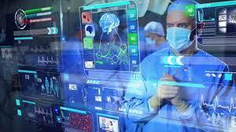

In today’s technologically advanced and digitized world, it is easy to overlook just how many aspects of our lives that computers play a part in. Computers are everywhere and in everything! They are in our smartphones and cars. They control our microwaves and coffee makers. Without an unseen computer, doing what it is programmed to do inside our devices and appliances, many of the mundane, everyday tasks that we take for granted would become difficult or nearly impossible. Along with making everyday life easier, there are innumerous benefits that computers have wrought upon the world, including medical and agricultural advancements along with an increase in cognitive ability and the emotional state of individuals. With and without their awareness, these benefits touch billions of people around the world each and every day. On the flip side of the same coin, there are the negative aspects of what computers have brought to our planet. There is widespread scamming and identity theft. There are children being bullied on social media and a wide range of medical conditions that have been linked back to the use of specific technologies. As this article moves forward, we will delve into some of the positives and negatives; allowing the reader to make their own decision on the simple, but everlasting question; Are we better off with or without computers?
Positives:
Nearly everything in our modern lives that is taken for granted has been derived from the development and evolution of computers.
Everythng from our cell phones to our cars, from our homes to our hospitals.
Negatives:As there are a wide range of positives that have been reaped through the evolution and implementation of computers, there are negative aspects to consider as well. This modern world has brought the world to our fingertips, literally. With that comes the consequences such as accelerated degeneration of vision and carpal tunnel syndrome. There are many more examples that we can be linked back to technology and not all of these are physical. There is also the ever present threat of emotional distress caused by bullies and trolls found online.
Please check out this link to an abstract, detailing the Positive Effects of Digital Technology Use by Adolescents published on the National Center for Biotechnology Information: "Click Here"